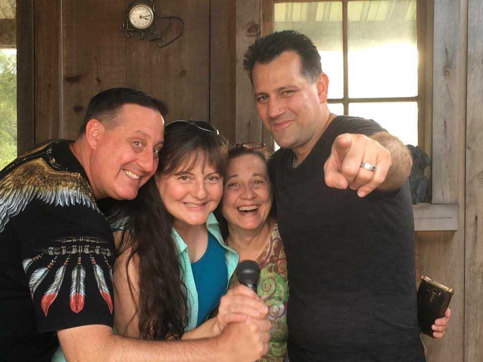
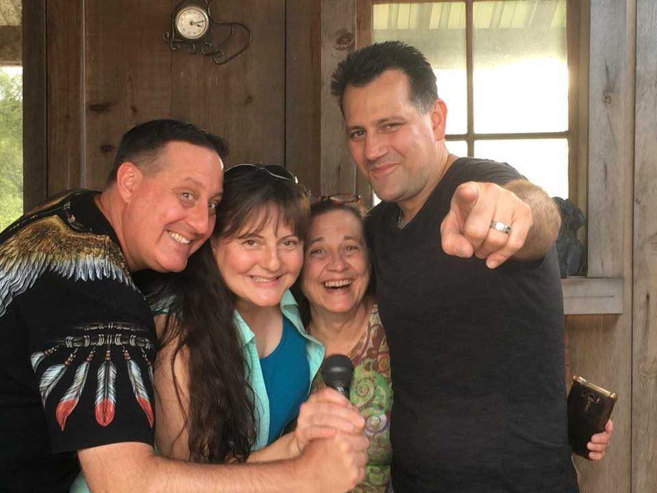

Mark Halverson
Life Happens
BUUIC Student
Currently a student for tourism and hospitality, grew up, served my country around the world, owned two restaurants, earned 3 University Degrees. Love my family. I like playing darts and I love cooking for people, especially some great steaks!
My family loves to eat steak and I love to cook it for them. Of course they eat many other things both Western style and Thai foods. It is always a bit of a challenge to get the steaks just perfect for the whole family all at the same time. Some like them medium and some like them well done. As a chef, I really do not like to cook a steak well done but I have to keep the family happy. This table shows each member of the family and how they like their steaks.
| Family Member | Favorite Steak Type | Prefered Doneness |
|---|---|---|
| Aim | Ribeye | Well |
| Pam | New York Strip | Medium |
| Anna | Tenderloin | Medium |
| Millie | T-Bone | Well |
| Me | Porterhouse | Medium Rare |
There are 8 different grades of beef
- USDA Prime
- Is the superior grade
- Amazing tenderness
- Juiciness
- Flavor and fine texture
- USDA Choice Steaks
- USDA Select Steaks
- USDA Standard
- USDA Commercial
- USDA Utility
- USDA Cutter
- USDA Canner
Description the USDA grades
- USDA Prime
It has the highest degree of fat marbling and is derived from the younger beef. That's why Prime is generally featured at the most exclusive upscale steakhouse restaurants.
- USDA Choice Steaks
The second highest graded beef. It has less fat marbling than Prime. Choice is a quality steak particularly if it is a cut that is derived from the loin and rib areas of the beef such as a tenderloin filet or rib steak. Generally USDA Choice will be less tender, juicy and flavorful with a slightly more coarse texture versus Prime.
- USDA Select Steak
Generally the lowest grade of steak you will find at a supermarket or restaurant. You will find it tougher, less juicy and less flavorful since it is leaner than Prime and Choice with very little marbling. The texture of Select is generally more coarse. Therefore, Select is not nearly as enjoyable or desirable.
Types of Cuts of Beef
- Rib
- Chuck
- loin
- Round
- Flank
- Short Plate
- Brisket
- Shank
Most Popular Steak Cuts
- Tenderloin Filet. It's also known as Filet Mignon
- Ribeye Steak
- New York Strip
- T-Bone Steak
- Porterhouse Steak

Pattaya, Chonburi
Thailand, 20150